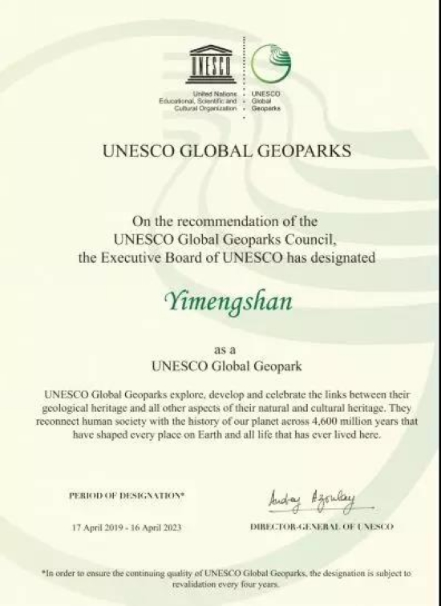

联合国教科文组织正式批准临沂沂蒙山为世界地质公园

6月25日，山东省人民政府新闻办公室召开新闻发布会，宣布联合国教科文组织正式批准临沂沂蒙山为世界地质公园，这是山东省继泰山之后第二个世界地质公园。
山东省自然资源厅二级巡视员李成金介绍，今年4月17日，联合国教科文组织执行局通过决议，批准沂蒙山为联合国教科文组织世界地质公园，5月22日联合国科教文组织生态与地球科学部主任、国际地球科学计划秘书长米格尔•克卢森纳-哥特签署批复文件，9月初将在印度尼西亚召开第六届亚太世界地质公园大会进行授牌，向全世界展示和推荐沂蒙山世界地质公园。
记者了解到，沂蒙山世界地质公园位于山东省临沂市境内，范围包含蒙山旅游度假区和蒙阴县全境，共14个乡镇，总面积1804.76平方公里，由蒙山园区、钻石园区、岱崮园区、孟良崮园区和云蒙湖园区5大园区组成。截至2018年底，全国共批准国家地质公园274个、省级地质公园343个，其中山东省有国家地质公园13个、省级地质公园51个，地质公园总数和省级地质公园数量均居全国第一。
沂蒙山之所以能获批联合国科教文组织世界地质公园，得益于公园内数量众多、特色鲜明、得天独厚的地质遗迹资源。经中国地质大学专家团队调查认定，目前已确定44处具有较高地质研究意义的地质遗迹点，可以分为地层遗迹、岩石遗迹、地貌遗迹、地质构造遗迹、古生物遗迹、矿床遗迹和水体景观遗迹等7大类型。截至目前，联合国教科文组织世界地质公园共147个，分布在41个国家和地区，其中我国有39个，包括山东省泰山、沂蒙山2个。
除具有丰富、珍稀的地质遗迹资源外，沂蒙山还孕育了深厚的历史文化，这里是中华文明的重要源头、是东夷文化的中心，有孔子小鲁的东山，李白杜甫曾在这里把臂同游，东坡居士曾借诗抒发深深的向往之情，历代文人墨客，吟咏传颂，延绵不绝。公园内有“孔子小鲁处”、崮寨文化遗址、百寿摩崖石刻等历史文化景观，也有万寿宫、金泉禅寺、雨王庙等宗教文化景观，融道教、佛教、儒教于一体。（图/琅琊新闻网 文/中国山东网）